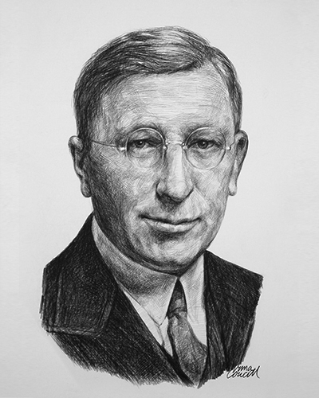
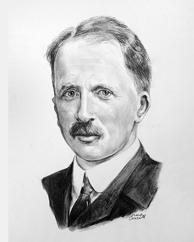
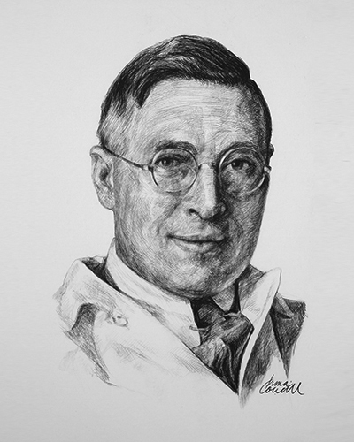
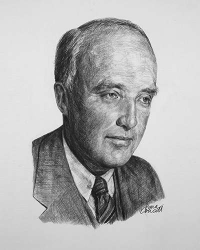
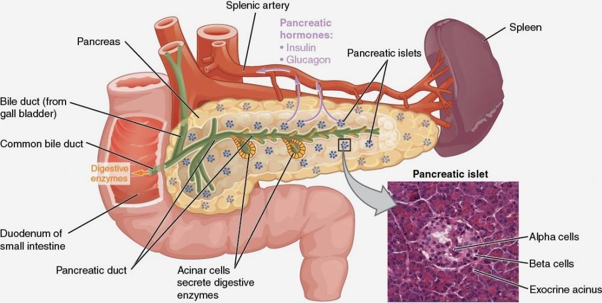
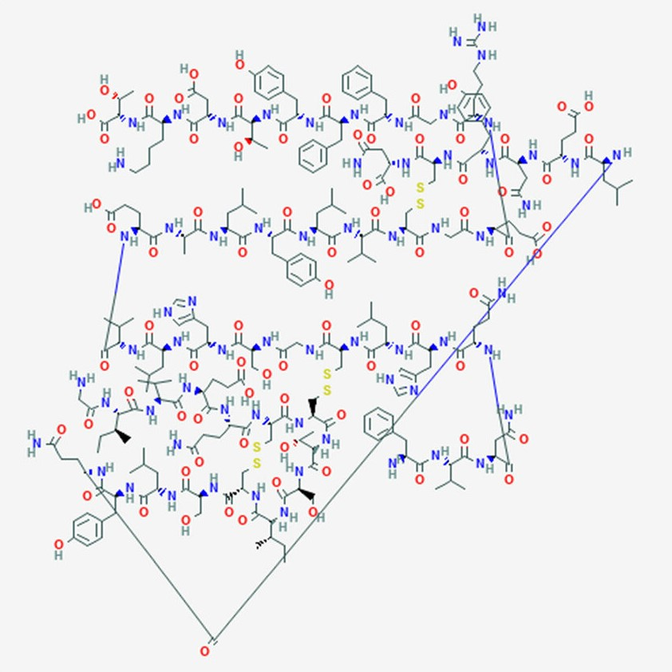
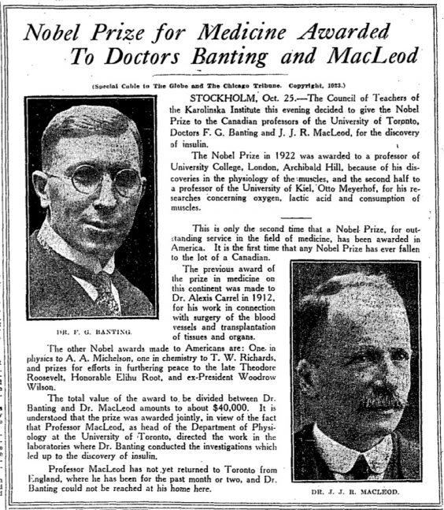

Insulin, a Treatment of Diabetes
Author: Minor Ahmad Ahmadi
Publisher: Miner Ahmad Ahmadi
Is Trustable: Yes
Block: E
Date Published: (hopefully) March 7th 2024
People:
Fredrick Grant Banting:
Born on November 14th, 1891, Alliston, Ontario and died on 21st February of 1941, near Musgrave Habour, Sir Fredrick Grant Banting was a co-discoverer of insulin, medical scientist and a painter. He was Canada’s first medical researcher at the University of Toronto. Banting, after Completing high school, entered the University of Toronto and after his failure in general arts he shifted focus and enrolled in the faculty of medicine. Banting later pointed out that he was extremely lacking in medical education because his class was shortened and graduation toke place in 1916 due to the severe need of doctors to serve in WW1, so he was sent abroad by the Corps to serve as a medical officer, since he had been enlisted to the Canadian Army Medical Corps. While working in the military hospitals of England, he had become interested in surgery and research. During his service he was sent to France as a battalion medical soldier and witnessed much great action in the last great battles of war, though his deployment in France ended as he sustained shrapnel wounds and was sent to England to recover. He later received Military Cross for his brave actions while mid-fire and then proceed to return to his homeland in 1919. After taking a year of surgical training at Toronto hospitals but failing to get employed, Banting started his own general practice of medicine and surgery but failed to sustain it and became unmotivated, so he started to work as an instructor of physiology at the University of Ontario, where he would sketch a thought after reading an article about the internal secretion of pancreas that would ultimately lead him to seek support for his proposed research at the University of Toronto, where he would meet with John James Macleod and start to work under his direction while being helped by Charles Best on May 17th of 1921, leading to the discovery of Insulin in the winter of 1921 which marked the end of the teams trials. Their discovery was declared in Washington on May 3rd, 1922.
John James Rickard Macleod:
Born on September 6th, 1876, Cluny, Scotland and died on 16th March of 1935 in Aberdeen Scotland, Sir John James Rickard Macleod was a renowned physiologist and a co-discoverer of insulin. Macleod got educated at the universities of Aberdeen and started teaching at Western Reserve University of Cleveland after Moving to America in 1903. He later became a professor of physiology at the University of Toronto where he would meet Fredrick Grant Banting and would give him lab space, equipment, guidance and one of his student helpers, Charles Herbert Best whom had one a coin toss with his friend on who should work with Banting, to research the hypothetical internal secretion of the pancreas. Macleod later shared the Nobel Prize of medicine and physiology with Banting for their discovery of Insulin because unlike what Banting and Best had claimed, Macleod was an essential and active supervisor of the research for insulin, his contributions, handling and clinical trials and expert presentation of the research impressed Swedish researchers who rightly recommended that Banting should share the Nobel Prize with him. He later left Canada in 1928 to become a professor of physiology at the University of Aberdeen, in Scotland where he passed away in 1935.
James Bertram Collip:
Born on November 20th, 1892, Bellville, Ontario and died on 19th June of 1965, London, Ontario, Sir James Bertram Collip was a biochemist teacher and a co-discoverer of insulin, best known for his accomplishments in endocrinological research. He was also one of the first to find parathyroid hormone. Collip studied and received a PhD in biochemistry from the University of Toronto in 1916, and spent much of his time as a medical researcher until in fall of 1921, when was working with John James Rickard Macleod in Toronto, during one his away time from the University of Alberta, when he was asked by Macleod to join the team researching the internal secretion of pancreas as his skills in biochemistry were very beneficial for the research. His abilities were proven when he discovered a way to successfully produce a nontoxic, antidiabetic pancreatic extract in January of 1922, he then went on to become the first person to produce insulin suitable for human use. Unfortunately, Collip had to return to the University of Alberta due to his away time ending and because of his arguing with Fredrick Grant Banting, though he did receive credit for his contributions in 1923 and a quarter of the Nobel Prize Money from Macleod. After that he continued his research in endocrinological research and finally in 1928 he succeeded Archibald Bryon Macallum as a professor of biochemistry at McGill University.
Charles Herbert Best:
Born on February 27th, 1899, West Pembroke, Maine and died on March 31st of 1978 in Toronto, Ontario, Sir Charlse Herbart Best was a physiologist and a co-discoverer of Insulin. Best had just finished his BA in physiology and biotechnology at the University of Toronto in the Spring of 1921 when he was hired by John James Richard Macleod to work on a project designed by Fredrick Grant Banting, also he had apparently won a coin toss between him and his friend to decide who would be working with Banting, after his deployment he and Banting started to achieve lots of things n their experiments which caused Macleod to support and expand the research in 1291, after which the well-funded well-trained team of researchers, including Banting, Best, Macleod and Collip would go on to finally be able to secure the internal secretion of the pancreas later named insulin. After said discovery, Best would go on to succeed Macleod as a professor of physiology at the University of Toronto in 1929, when he had completed his PhD studies in England.
Insulin:
Insulin is a natural hormone produced by the islets of Langerhans cells of the pancreas, it is responsible for converting carbohydrates to glucose(sugar) with another hormone produced in the same location called glucagon which converts glycogen to glucose, together they make sure that your body is keeping and using the right amount and level of glucose, so that it can properly function. Some of its other functions are helping muscle and fat cells take in and use glucose, simulating the production of glycogen, helping the storage of fat within cells by stopping the usage of it as a source of energy, and contributing to the production of proteins in various phases of the cell cycle.
Chemically speaking it is composed of two chains, 21 amino acids in the A chain and 30 in the B chain that are bonded together by a double sulfur bond, one linking the seventh amino acids and the other linking the twentieth of A chain and the nineteenth of the B chain amino acids. For his discovery Fredrick Sanger received the 1958 Nobel Prize in chemistry.
The Discovery and the First Treated:
The first hints of its existence(insulin) were detected by English physiologist Ernest Starling and biochemist William Bayliss who discovered a hormone like substance coming out of the glands and going by blood to other places of the body to manage cell activity. Then in 1916 Edward Sharpey-Shafer, another physiologist with English origin, theorized the existence of a hormone controlling the glucose levels in the blood, he also thought that was being produced in the pancreas specifically the islet cells so he named the theorized hormone insulin (Latin word for island), his theory turned out to be true when a research group consisting of Sir Fredrick Grant Banting, and Charles Best, had secured an impure but sufficient enough extract form animals that functioned in accord to his prediction. The extract was later further purified by Biochemist James Bertram Collip, and was the version of insulin that saved Leomard Thompson, a thirteen-year-old who was seemingly at the verge of death and who had previously received an ineffective injection of the impure extract, developed by Best and Banting.
The Controversy and Availiblity(kinda):
Banting originally had the idea that it was him and best whom had discovered the extract mostly working alone in the summer of 1921 but he shared the Nobel Prize for the discovery of insulin with John James Rickard Macleod because unlike what Banting and Best was claiming, Macleod was an important part of the discovery, his contributions, handling of clinical trials, and presentation of the research had impressed the Swedish researchers so the Nobel Committee of Caroline Institute, found in Sweeden, concluded that Banting would not have discovered insulin without the supervision and advice from Macleod so the Nobel Prize in medicine and physiology was given to Banting and Macleod, Banting would later on stated that Best should’ve been honoured and share his prize money with him, following this Macleod would also do the same with Collip. Though the admirers of Banting did not accept this and went to extreme lengths such as propaganda, and extensive editing of history making the public believe that it was Banting and Best who had discovered insulin and so Macleod and Collip became forgotten men, but not in the eyes of the informed who believe that the discovery of insulin was a joint operation whom not just Banting, Best, Collip, and Macleod had contributed into but other scientists too. Insulin then became available to the public in 1923 largely because of the addition of chemist Peter Maloney whom had developed a purifying technique that allowed the production of insulin in large amounts.
